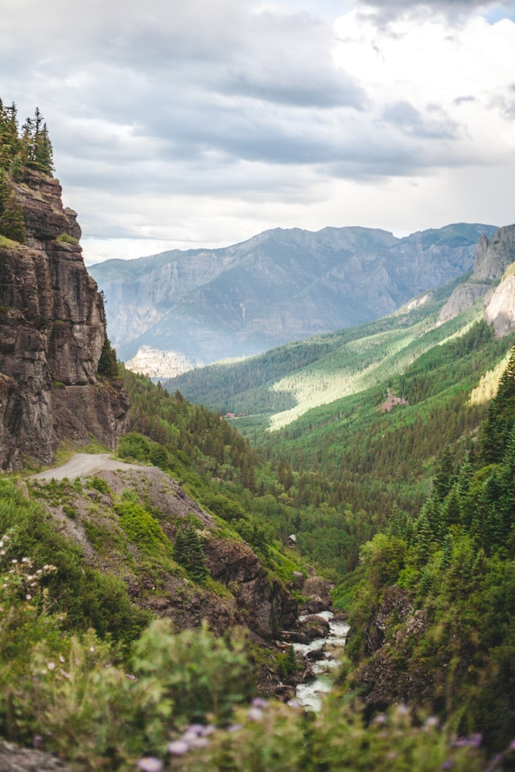

- 포토뉴스
-
-
2024년 6월 북한산둘레길 계도 탐방
2024-06-03 -
2024년 5월 북한산둘레길 계도 탐방
2024-05-07 -
일본 큐슈다케오 자연문화 탐방
2024-04-22 -
제22기 자연환경해설사 교육 종료
2024-04-19 -
간담회 개최
2024-04-01
-
- 축하합니다
-
-
본회 주왕산지회 이덕희 부지회장 시선집
2023-02-28
「낙조」 발간을 축하합니다. -
본회 주왕산지회 이덕희 부지회장
2020-07-08
「그리운 산하」 출간을 축하합니다. -
제21대 국회의원 당선을 축하드립니다.
2020-04-17 -
안중국 홍보이사 제2대 국립등산학교장 취임
2020-03-04 -
김기일 무등산지회장_제4대 4.19 문화원장 취임
2018-12-13
-
- 알려드립니다
-
-
야생동물 실태조사 전문인력 양성교육 안내
2024-04-25 -
철원 DMZ 성재산 도립공원 지정
2024-04-12 -
한국자연공원협회 일본국 규슈 다케오 자연문화탐방
2024-03-16 -
<2024 정기총회>
2024-02-22
신임회장에 이찬희 전 환경부 자연보전국장 선출 -
2024년 제22기 자연환경해설사 모집 마감 안내
2024-02-19
-

2024-05-07